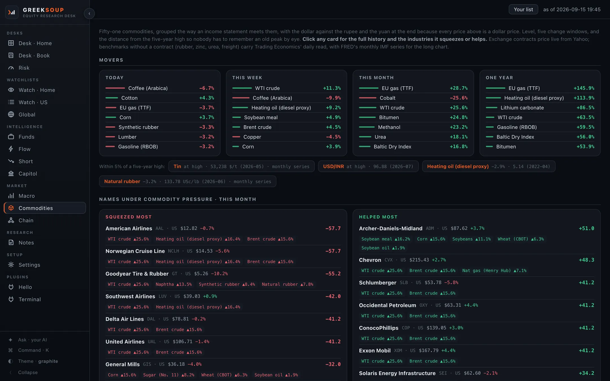
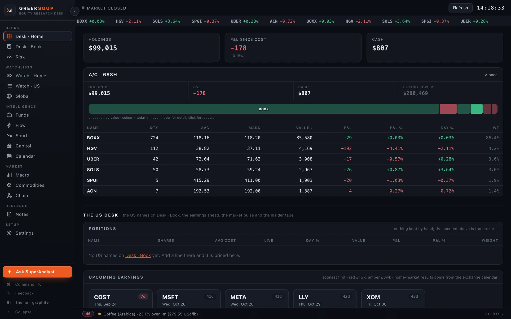

The one-person equity research desk · open source · 2026-09-16.35
Run the whole desk.
On your own computer.
Fifteen screens that read your broker, the filings, the options tape and the public record. Every list on them is yours. An AI you already pay for answers about your book. Your keys stay with you, and it places no orders.
curl -fsSL https://greeksoup.ai/install.sh | bash
irm https://greeksoup.ai/install.ps1 | iex
·Paste it in a terminal, press Enter, the desk opens in your browser. Two other ways in.

Squeezes tyre makers; Goodyear files a 1% move as about $8 million a year. Helps rubber plantations and latex processors.
01 · The screens
Fifteen screens. Every list on them yours.
Each one reads the public record or your own broker, and names its source on the screen. What ships is a starter: the funds, the members, the series, the commodities and the chains are yours to add to, edit and put away. Two screens need a broker key; the rest run without one.

02 · From its own data
Three things it draws.
Read from the desk's own responses, each one dated. They describe positioning and carry no view.
Fifty-one commodities, one year.
Sorted by the one-year change, with the industries each move squeezes or helps on the card. Prices as the desk read them on 16 September 2026. One benchmark, Coking coal (Australia), has no year of history yet and is left out.
What changed in a 13F.
Funds reads every 13F-HR from SEC EDGAR and compares the two latest filings line by line. Berkshire Hathaway, quarter ending 30 June 2026, filed 14 August 2026, as the desk read it on 13 September 2026.
The walls.
Flow reads CBOE's free delayed chains and draws where the open interest stands: the strike with the most puts below the price, the strike with the most calls above it, and the move the options market is paying for. Apple, as the desk read it on 16 September 2026.
03 · What it needs
Nothing to sign up for.
Keys are optional. The desk reads the free public record first, and the Settings screen takes each key when you have it. Picked from a list, nothing assumed; anything not on a list is one file an AI agent writes to a written contract inside the folder.
13of the fifteen screens
Live the moment the desk starts: the US panels of Desk · Home, Desk · Book, Risk, Watch · US, Global, Funds, Flow, Short, Capitol, Macro, Commodities, Chain, Notes, and any ticker's chart, quote, ratios and insider table.
SEC EDGAR · FINRA · CBOE delayed chains · FRED · Senate and House disclosures · Yahoo Finance · Trading Economics · the home market's exchange and statistics office
2more screens, read-only
Desk · Home with holdings, cash and, where the broker serves them, futures and margin, priced live; Watch · Home with live ticks in market hours. The market follows the broker: India and the United States ship, and another market is one short file.
Alpaca · ICICI Direct · Interactive Brokers · Tradier · Trading 212 · Zerodha · any other
6yrsof statements on any ticker
Statements, ratio history, segments, estimates, peers and the DCF sandbox on any ticker; the 50 and 200 day columns on Watch · US; the insider scan across the whole market; both chambers on Capitol.
Financial Modeling Prep ships · another provider is one file
The one you already pay for.
Claude Code, Codex, Gemini CLI, Kimi Code, Grok Build, Qwen Code or Cursor on your computer answers the Ask box with no key at all, through its own sign-in, which the desk never sees. Or a key from any of fourteen labs, or a model running on your computer. The Ask box on every screen sends your question with that screen's own numbers, so the answer is about your own book. It never says buy, sell or hold.
Claude Code · Codex · Gemini CLI · Kimi Code · Grok Build · Qwen Code · Cursor, with no key · Anthropic · OpenAI · Google (Gemini) · DeepSeek · Kimi (Moonshot) · MiniMax · Z.ai (GLM) · Alibaba (Qwen) · xAI (Grok) · Mistral · OpenRouter (many models, one key) · Ollama on this computer · LM Studio on this computer · Any other endpoint
Your AIChange it by describing what you want.
The desk carries a page any AI agent on your computer can read, and a file at the top of the folder that tells the agent what belongs to you and must not be touched. Open the folder in Claude Code, Codex, Kimi Code or whichever you use, and say what you want changed. That is how it was built.
With an agent04 · Install
One line, about a minute.
It finds Python on your computer or installs it, downloads the desk into a GreekSoup folder in your home folder, sets it to start with your computer, and opens it in your browser at an address only your computer can reach. A Mac, a Windows PC or a Linux computer you leave on while you work. Nothing on this page needs an account.
curl -fsSL https://greeksoup.ai/install.sh | bash
irm https://greeksoup.ai/install.ps1 | iex
OrWith an agent, about twenty minutes, the agent does the work
Download the folder, unzip it, drag it into Documents, open it in Claude Code, Codex, Kimi Code, Grok Build or whichever you use, and paste this. It installs what it needs and asks for each key one at a time.
Read README.md in this folder and set the desk up for me on this computer. Install what it needs, ask me for each key one at a time and tell me where to get it, and if I say I have no broker to connect, leave the broker keys empty. Then start the desk, set it to start by itself whenever I log in, and tell me the address to open.
OrFrom source, to see what the agent does
One Python file serves the fifteen screens. Your lists, chains and notes are plain files in a folder you can open, and everything specific to a broker sits in one file per broker.
git clone https://github.com/shubhamsborkar/greeksoup.git
cd greeksoup
python3 -m venv .venv && source .venv/bin/activate
pip install -r requirements.txt
python server.py
- Update
- Once a day the desk looks at GitHub. When a newer version exists, a strip at the top of every screen says what changed, and one click brings it in. Your keys, your lists, your research vault and any file your agent changed stay as they are; when a version changes the shape of a file you own, the desk keeps a copy first and says so.
- Check
- One line prints what your agent needs to help you, and nothing private.
- Go back
- The last three versions are kept. One line restores any of them.
- Uninstall
- One double-click. Your lists are saved to the Desktop first, and nothing is left behind.
- 2026-09-16.35currentThe landing page is rebuilt lean
- 2026-09-16.34The repository is github.com/shubhamsborkar/greeksoup now, and every address in the desk, the installers, the docs, the landing page and the README
- 2026-09-16.33The repository reads like the project it is
- 2026-09-15.32Two guards on every request, so a web page you visit cannot read your book or post to Settings
- 2026-09-15.31The apps card under Your AI reads the computer itself, so Claude Code, Codex or Gemini CLI show as found before any plugin is in, and Use it for Ask
Read from VERSION on GitHub, the same file your desk reads when it checks for an update. Every release.
05 · Security
It answers only to your computer.
The desk runs on your computer and answers only to your computer. It runs no agent of its own, executes nothing a page or a feed says, and takes instructions from nobody but you. So the safe place for it is the computer in front of you, and the pages behind this section say so in full, limits included.
- Your broker
- Only if you connected one, with your keys, read-only.
- The public record
- SEC EDGAR, FINRA, CBOE, FRED, the Senate and the House, Yahoo Finance, Trading Economics, the home market's own sources.
- Your data provider
- Only if you gave it a key.
- Your AI
- Only if you chose one: an app on your computer under its own login, a key, or a local model. What goes is your question and the screen you asked from, when you press Enter.
- GitHub, and greeksoup.ai
- One small request a day for the version file, with no identifier; the update itself when you click; the plugin list when you open that tab.
- Google Fonts
- The desk's typefaces.
That is the list. Nothing else. No telemetry, no analytics, no account.
- A web page you visit
- Every request must name your computer as its host, and every request from a browser must come from the desk's own pages. So a page elsewhere cannot read your book or post to Settings; a program you run on your computer can, because it is you.
- A wrong number
- Every broker file uses that broker's read endpoints and nothing else. There is no order path. A wrong number costs you a wrong read, never a trade.
- Your keys
- One file in the desk folder, written by Settings. The update never touches it, the backup never carries it, and the page your AI reads tells the AI not to read it.
- The honest limits
- Anyone at your unlocked computer can read the desk. A plugin runs with the desk's own reach, so read what you install. The AI you chose sees what you ask about; a local model keeps it home.
06 · Questions
What readers ask.
Does it cost anything?
No. GreekSoup is open source under the MIT licence. You bring your own keys, and without any key at all thirteen of the fifteen screens still run on the free public record.
Does it place orders?
No. This copy reads your broker account and places no orders. If you extend it to trade, that is your own build, under your broker's and your regulator's rules.
Which brokers connect?
Alpaca, ICICI Direct, Interactive Brokers, Tradier, Trading 212 and Zerodha, read-only, as the desk comes. Any other broker that lets a program read your account is one file an AI agent writes to the written contract inside the folder.
Where do my keys live?
In a file inside the GreekSoup folder on your own computer. The Settings screen takes each key and keeps it there. The desk talks to your broker, to the public sources it reads, and once a day to GitHub to check for a newer version.
Which AI can it use?
Any. An app you already pay for on this computer, Claude Code, Codex, Gemini CLI, Kimi Code, Grok Build, Qwen Code or Cursor, answers with no key at all; fourteen providers are preset for a key, local models among them; and any AI agent on your computer can read the desk through a page made for it. Each one answers about your book and not about a stranger's.
Will using Claude Code or Codex from the desk put my account at risk?
No. The desk never sees your login: it runs the maker's own app on your computer, the way a shell script would, hands it a question and reads the answer. That is the app being used as the app, under your own sign-in, which each maker documents. What the makers do decide is how the usage is counted; as of 15 June 2026 Anthropic counts Claude Code's print mode against your normal subscription limits and has paused a plan to move it to a separate monthly credit. If a maker changes its rules, switch the Ask box to a key or a local model and nothing else changes. Your AI has the detail.
Does my book go to the AI?
When you ask, yes. The Ask box sends your question with the numbers on the screen you are on, and on Desk · Home those are your holdings. It goes to the one place you chose and nowhere else; a model running on your computer keeps it there. Nothing is sent until you press Enter.
Can a web page I visit read my desk?
No. Every request must name your computer as its host and, from a browser, must come from the desk's own pages; anything else is refused before it is read. Security explains both guards.
Is a server safer than my laptop?
No, the other way round. The desk's safety rests on nothing else being able to reach it, which holds on a laptop and turns around on a machine with a front door on the internet. Your computer or a server.
The lists on the screens are someone else's. Can I change them?
Every list is yours. Funds, Capitol, Macro, Commodities and the options tape carry a Your list button: add, edit, remove with Undo, bring the starters back. Chain is yours to draft and build.
Which markets?
The market follows the broker. India and the United States ship today, and another market is one short file to a written contract. Global takes any symbol from any exchange, and a reader with no broker names a home market in Settings.
What does it run on?
Mac, Windows and Linux. It needs Python 3.10 or newer, which the one-line install finds or installs for you, and a browser. The desk opens at an address only your own computer can reach.
Does it send anything anywhere?
Your broker, the public sources, your data provider and your AI if you connected them, and GitHub once a day to check for a newer version. No telemetry, no analytics, no account. The whole list.
What happens to my files when it updates?
Nothing is lost. Your keys, your lists, your research vault and any file your agent changed stay as they are, and when a version changes the shape of a file you own the desk keeps a copy first and says so. The last three versions are kept, and one line goes back to any of them.
How do I change it?
Open the folder in an AI agent, Claude Code, Codex, Kimi Code, Grok Build or whichever you use, and describe what you want. That is how the desk was built, and the README inside the folder is written for the agent as much as for you.
From Shikshan Nivesh
shikshan nivesh/GreekSoup is the research desk we use every day, built with Claude Code from plain-English descriptions and published so that you can run the same desk on your own computer, with your own keys, and change it by describing what you want.